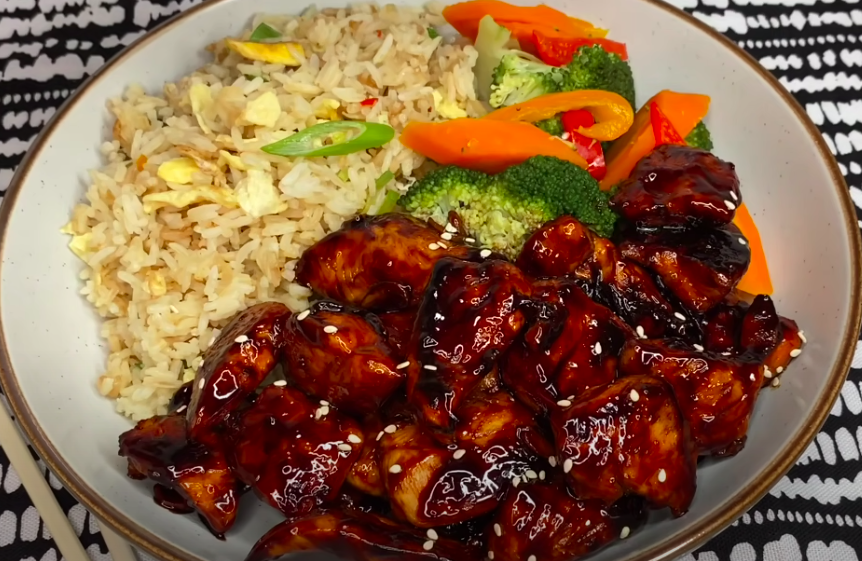

Teriyaki Chicken

Description
This recipe comes from TERRI-ANN'S KITCHEN she is a youtuber that post different recipes.
Ingredients
- Boneless Chicken Thigh - 450 gms (1 lb)
For the Teriyaki Sauce:
- Light Soy Sauce- 3 tbsp (Preferably Kikkoman)
- Sugar- 3 tbsp
- Apple Cider Vinegar- 1 tsp
- oil- 1 tbsp
- Ginger grated- 1 tsp
- Garlic grated- 1 tsp
Other Ingredients:
- Salt for seasoning- 1/4 tsp
- Pepper powder for seasoning- 1/4 tsp
- Oil for pan frying the chicken- 1.5 tbsp
- Sesame seeds- 1 tsp (as garnish)
- Spring onion greens, chopped- 2 tbsp (as garnish)
Steps
- Cut the boneless thighs into bite sized chunks
- Grate the ginger, garlic and prepare the teriyaki sauce
- Heat oil in a pan and then add the chicken pieces. Season with salt and pepper powder.
- Now add the Teriyaki Sauce (prepared earlier), give a mix and cook on medium heat for 3-4mins till the sauce is absorbed and coats the chicken pieces.
- Garnish with the sesame seeds and chopped spring onion greens.